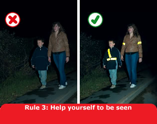

Pavements (including any path along the side of a road) should be used if provided. Where possible, avoid being next to the kerb with your back to the traffic. If you have to step into the road, look both ways first. Always show due care and consideration for others.
If there is no pavement, keep to the right-hand side of the road so that you can see oncoming traffic. You should take extra care and
It may be safer to cross the road well before a sharp right-hand bend so that oncoming traffic has a better chance of seeing you. Cross back after the bend.
Help other road users to see you. Wear or carry something light-coloured, bright or fluorescent in poor daylight conditions. When it is dark, use reflective materials (e.g. armbands, sashes, waistcoats, jackets, footwear), which can be seen by drivers using headlights up to three times as far away as non-reflective materials.

Young children should not be out alone on the pavement or road (see Rule 7). When taking children out, keep between them and the traffic and hold their hands firmly. Strap very young children into push-chairs or use reins. When pushing a young child in a buggy, do not push the buggy into the road when checking to see if it is clear to cross, particularly from between parked vehicles.
Organised walks. Large groups of people walking together should use a pavement if available; if one is not, they should keep to the left. Look-outs should be positioned at the front and back of the group, and they should wear fluorescent clothes in daylight and reflective clothes in the dark. At night, the look-out in front should show a white light and the one at the back a red light. People on the outside of large groups should also carry lights and wear reflective clothing.
Motorways. Pedestrians MUST NOT be
on motorways or slip roads except in an emergency (see Rule 271 and
Rule 275).
Laws RTRA sect 17, MT(E&W)R 1982 as amended, reg 15(1)(b)
& MT(S)R reg 13